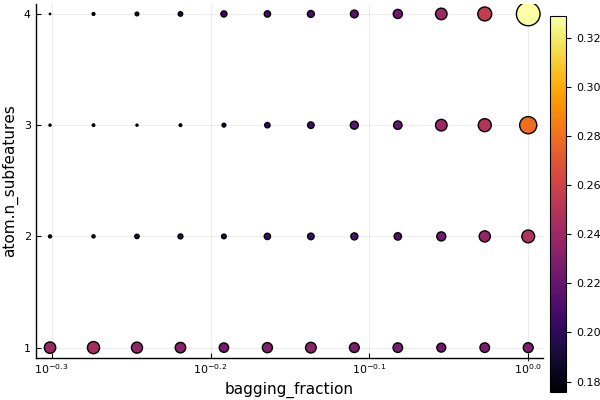

Common MLJ Workflows
Data ingestion
import RDatasets
channing = RDatasets.dataset("boot", "channing")
first(channing, 4)| Sex | Entry | Exit | Time | Cens | |
|---|---|---|---|---|---|
| Cat… | Int32 | Int32 | Int32 | Int32 | |
| 1 | Male | 782 | 909 | 127 | 1 |
| 2 | Male | 1020 | 1128 | 108 | 1 |
| 3 | Male | 856 | 969 | 113 | 1 |
| 4 | Male | 915 | 957 | 42 | 1 |
Inspecting metadata, including column scientific types:
schema(channing)┌─────────┬─────────────────────────────────┬───────────────┐
│ _.names │ _.types │ _.scitypes │
├─────────┼─────────────────────────────────┼───────────────┤
│ Sex │ CategoricalValue{String, UInt8} │ Multiclass{2} │
│ Entry │ Int32 │ Count │
│ Exit │ Int32 │ Count │
│ Time │ Int32 │ Count │
│ Cens │ Int32 │ Count │
└─────────┴─────────────────────────────────┴───────────────┘
_.nrows = 462
Unpacking data and correcting for wrong scitypes:
y, X = unpack(channing,
==(:Exit), # y is the :Exit column
!=(:Time); # X is the rest, except :Time
:Exit=>Continuous,
:Entry=>Continuous,
:Cens=>Multiclass)
first(X, 4)| Sex | Entry | Cens | |
|---|---|---|---|
| Cat… | Float64 | Cat… | |
| 1 | Male | 782.0 | 1 |
| 2 | Male | 1020.0 | 1 |
| 3 | Male | 856.0 | 1 |
| 4 | Male | 915.0 | 1 |
Note: Before julia 1.2, replace !=(:Time) with col -> col != :Time.
y[1:4]4-element Vector{Float64}:
909.0
1128.0
969.0
957.0Loading a built-in supervised dataset:
X, y = @load_iris;
selectrows(X, 1:4) # selectrows works for any Tables.jl table(sepal_length = [5.1, 4.9, 4.7, 4.6], sepal_width = [3.5, 3.0, 3.2, 3.1], petal_length = [1.4, 1.4, 1.3, 1.5], petal_width = [0.2, 0.2, 0.2, 0.2],)
y[1:4]4-element CategoricalArray{String,1,UInt32}:
"setosa"
"setosa"
"setosa"
"setosa"Model search
Reference: Model Search
Searching for a supervised model:
X, y = @load_boston
models(matching(X, y))59-element Vector{NamedTuple{(:name, :package_name, :is_supervised, :docstring, :hyperparameter_ranges, :hyperparameter_types, :hyperparameters, :implemented_methods, :is_pure_julia, :is_wrapper, :iteration_parameter, :load_path, :package_license, :package_url, :package_uuid, :prediction_type, :supports_class_weights, :supports_online, :supports_training_losses, :supports_weights, :input_scitype, :target_scitype, :output_scitype), T} where T<:Tuple}:
(name = ARDRegressor, package_name = ScikitLearn, ... )
(name = AdaBoostRegressor, package_name = ScikitLearn, ... )
(name = BaggingRegressor, package_name = ScikitLearn, ... )
(name = BayesianRidgeRegressor, package_name = ScikitLearn, ... )
(name = ConstantRegressor, package_name = MLJModels, ... )
(name = DecisionTreeRegressor, package_name = BetaML, ... )
(name = DecisionTreeRegressor, package_name = DecisionTree, ... )
(name = DeterministicConstantRegressor, package_name = MLJModels, ... )
(name = DummyRegressor, package_name = ScikitLearn, ... )
(name = ElasticNetCVRegressor, package_name = ScikitLearn, ... )
⋮
(name = RidgeRegressor, package_name = MultivariateStats, ... )
(name = RidgeRegressor, package_name = ScikitLearn, ... )
(name = RobustRegressor, package_name = MLJLinearModels, ... )
(name = SGDRegressor, package_name = ScikitLearn, ... )
(name = SVMLinearRegressor, package_name = ScikitLearn, ... )
(name = SVMNuRegressor, package_name = ScikitLearn, ... )
(name = SVMRegressor, package_name = ScikitLearn, ... )
(name = TheilSenRegressor, package_name = ScikitLearn, ... )
(name = XGBoostRegressor, package_name = XGBoost, ... )models(matching(X, y))[6]A simple Decision Tree for regression with support for Missing data, from the Beta Machine Learning Toolkit (BetaML).
→ based on [BetaML](https://github.com/sylvaticus/BetaML.jl).
→ do `@load DecisionTreeRegressor pkg="BetaML"` to use the model.
→ do `?DecisionTreeRegressor` for documentation.
(name = "DecisionTreeRegressor",
package_name = "BetaML",
is_supervised = true,
docstring = "A simple Decision Tree for regression with support for Missing data, from the Beta Machine Learning Toolkit (BetaML).\n→ based on [BetaML](https://github.com/sylvaticus/BetaML.jl).\n→ do `@load DecisionTreeRegressor pkg=\"BetaML\"` to use the model.\n→ do `?DecisionTreeRegressor` for documentation.",
hyperparameter_ranges = (nothing, nothing, nothing, nothing, nothing, nothing),
hyperparameter_types = ("Int64", "Float64", "Int64", "Int64", "Function", "Random.AbstractRNG"),
hyperparameters = (:maxDepth, :minGain, :minRecords, :maxFeatures, :splittingCriterion, :rng),
implemented_methods = [:fit, :predict],
is_pure_julia = true,
is_wrapper = false,
iteration_parameter = nothing,
load_path = "BetaML.Trees.DecisionTreeRegressor",
package_license = "MIT",
package_url = "https://github.com/sylvaticus/BetaML.jl",
package_uuid = "024491cd-cc6b-443e-8034-08ea7eb7db2b",
prediction_type = :deterministic,
supports_class_weights = false,
supports_online = false,
supports_training_losses = false,
supports_weights = false,
input_scitype = Table{_s46} where _s46<:Union{AbstractVector{_s9} where _s9<:Missing, AbstractVector{_s9} where _s9<:Known},
target_scitype = AbstractVector{_s349} where _s349<:Continuous,
output_scitype = Unknown,)More refined searches:
models() do model
matching(model, X, y) &&
model.prediction_type == :deterministic &&
model.is_pure_julia
end20-element Vector{NamedTuple{(:name, :package_name, :is_supervised, :docstring, :hyperparameter_ranges, :hyperparameter_types, :hyperparameters, :implemented_methods, :is_pure_julia, :is_wrapper, :iteration_parameter, :load_path, :package_license, :package_url, :package_uuid, :prediction_type, :supports_class_weights, :supports_online, :supports_training_losses, :supports_weights, :input_scitype, :target_scitype, :output_scitype), T} where T<:Tuple}:
(name = DecisionTreeRegressor, package_name = BetaML, ... )
(name = DecisionTreeRegressor, package_name = DecisionTree, ... )
(name = DeterministicConstantRegressor, package_name = MLJModels, ... )
(name = ElasticNetRegressor, package_name = MLJLinearModels, ... )
(name = EvoTreeRegressor, package_name = EvoTrees, ... )
(name = HuberRegressor, package_name = MLJLinearModels, ... )
(name = KNNRegressor, package_name = NearestNeighborModels, ... )
(name = KPLSRegressor, package_name = PartialLeastSquaresRegressor, ... )
(name = LADRegressor, package_name = MLJLinearModels, ... )
(name = LassoRegressor, package_name = MLJLinearModels, ... )
(name = LinearRegressor, package_name = MLJLinearModels, ... )
(name = LinearRegressor, package_name = MultivariateStats, ... )
(name = NeuralNetworkRegressor, package_name = MLJFlux, ... )
(name = PLSRegressor, package_name = PartialLeastSquaresRegressor, ... )
(name = QuantileRegressor, package_name = MLJLinearModels, ... )
(name = RandomForestRegressor, package_name = BetaML, ... )
(name = RandomForestRegressor, package_name = DecisionTree, ... )
(name = RidgeRegressor, package_name = MLJLinearModels, ... )
(name = RidgeRegressor, package_name = MultivariateStats, ... )
(name = RobustRegressor, package_name = MLJLinearModels, ... )Searching for an unsupervised model:
models(matching(X))28-element Vector{NamedTuple{(:name, :package_name, :is_supervised, :docstring, :hyperparameter_ranges, :hyperparameter_types, :hyperparameters, :implemented_methods, :is_pure_julia, :is_wrapper, :iteration_parameter, :load_path, :package_license, :package_url, :package_uuid, :prediction_type, :supports_class_weights, :supports_online, :supports_training_losses, :supports_weights, :input_scitype, :target_scitype, :output_scitype), T} where T<:Tuple}:
(name = AffinityPropagation, package_name = ScikitLearn, ... )
(name = AgglomerativeClustering, package_name = ScikitLearn, ... )
(name = Birch, package_name = ScikitLearn, ... )
(name = ContinuousEncoder, package_name = MLJModels, ... )
(name = DBSCAN, package_name = ScikitLearn, ... )
(name = FactorAnalysis, package_name = MultivariateStats, ... )
(name = FeatureAgglomeration, package_name = ScikitLearn, ... )
(name = FeatureSelector, package_name = MLJModels, ... )
(name = FillImputer, package_name = MLJModels, ... )
(name = GMMClusterer, package_name = BetaML, ... )
⋮
(name = MiniBatchKMeans, package_name = ScikitLearn, ... )
(name = MissingImputator, package_name = BetaML, ... )
(name = OPTICS, package_name = ScikitLearn, ... )
(name = OneClassSVM, package_name = LIBSVM, ... )
(name = OneHotEncoder, package_name = MLJModels, ... )
(name = PCA, package_name = MultivariateStats, ... )
(name = PPCA, package_name = MultivariateStats, ... )
(name = SpectralClustering, package_name = ScikitLearn, ... )
(name = Standardizer, package_name = MLJModels, ... )Getting the metadata entry for a given model type:
info("PCA")
info("RidgeRegressor", pkg="MultivariateStats") # a model type in multiple packagesRidge regressor with regularization parameter lambda. Learns a
linear regression with a penalty on the l2 norm of the coefficients.
→ based on [MultivariateStats](https://github.com/JuliaStats/MultivariateStats.jl).
→ do `@load RidgeRegressor pkg="MultivariateStats"` to use the model.
→ do `?RidgeRegressor` for documentation.
(name = "RidgeRegressor",
package_name = "MultivariateStats",
is_supervised = true,
docstring = "Ridge regressor with regularization parameter lambda. Learns a\nlinear regression with a penalty on the l2 norm of the coefficients.\n\n→ based on [MultivariateStats](https://github.com/JuliaStats/MultivariateStats.jl).\n→ do `@load RidgeRegressor pkg=\"MultivariateStats\"` to use the model.\n→ do `?RidgeRegressor` for documentation.",
hyperparameter_ranges = (nothing, nothing),
hyperparameter_types = ("Union{Real, AbstractVecOrMat{T} where T}", "Bool"),
hyperparameters = (:lambda, :bias),
implemented_methods = [:clean!, :fit, :fitted_params, :predict],
is_pure_julia = true,
is_wrapper = false,
iteration_parameter = nothing,
load_path = "MLJMultivariateStatsInterface.RidgeRegressor",
package_license = "MIT",
package_url = "https://github.com/JuliaStats/MultivariateStats.jl",
package_uuid = "6f286f6a-111f-5878-ab1e-185364afe411",
prediction_type = :deterministic,
supports_class_weights = false,
supports_online = false,
supports_training_losses = false,
supports_weights = false,
input_scitype = Table{_s46} where _s46<:(AbstractVector{_s9} where _s9<:Continuous),
target_scitype = AbstractVector{Continuous},
output_scitype = Unknown,)Instantiating a model
Reference: Getting Started, Loading Model Code
Tree = @load DecisionTreeClassifier pkg=DecisionTree
tree = Tree(min_samples_split=5, max_depth=4)DecisionTreeClassifier(
max_depth = 4,
min_samples_leaf = 1,
min_samples_split = 5,
min_purity_increase = 0.0,
n_subfeatures = 0,
post_prune = false,
merge_purity_threshold = 1.0,
pdf_smoothing = 0.0,
display_depth = 5) @772or
tree = (@load DecisionTreeClassifier)()
tree.min_samples_split = 5
tree.max_depth = 4Evaluating a model
Reference: Evaluating Model Performance
X, y = @load_boston
KNN = @load KNNRegressor
knn = KNN()
evaluate(knn, X, y, resampling=CV(nfolds=5), measure=[RootMeanSquaredError(), MeanAbsoluteError()])┌───────────────────────────┬───────────────┬───────────────────────────────┐ │ _.measure │ _.measurement │ _.per_fold │ ├───────────────────────────┼───────────────┼───────────────────────────────┤ │ RootMeanSquaredError @408 │ 8.77 │ [8.53, 8.8, 10.7, 9.43, 5.59] │ │ MeanAbsoluteError @272 │ 6.02 │ [6.52, 5.7, 7.65, 6.09, 4.11] │ └───────────────────────────┴───────────────┴───────────────────────────────┘ _.per_observation = [missing, missing] _.fitted_params_per_fold = [ … ] _.report_per_fold = [ … ]
Note RootMeanSquaredError() has alias rms and MeanAbsoluteError() has alias mae.
Do measures() to list all losses and scores and their aliases.
Basic fit/evaluate/predict by hand:
Reference: Getting Started, Machines, Evaluating Model Performance, Performance Measures
import RDatasets
vaso = RDatasets.dataset("robustbase", "vaso"); # a DataFrame
first(vaso, 3)| Volume | Rate | Y | |
|---|---|---|---|
| Float64 | Float64 | Int64 | |
| 1 | 3.7 | 0.825 | 1 |
| 2 | 3.5 | 1.09 | 1 |
| 3 | 1.25 | 2.5 | 1 |
y, X = unpack(vaso, ==(:Y), c -> true; :Y => Multiclass)
Tree = @load DecisionTreeClassifier pkg=DecisionTreeDecisionTreeClassifier(
max_depth = 2,
min_samples_leaf = 1,
min_samples_split = 2,
min_purity_increase = 0.0,
n_subfeatures = 0,
post_prune = false,
merge_purity_threshold = 1.0,
pdf_smoothing = 0.0,
display_depth = 5) @645Bind the model and data together in a machine , which will additionally store the learned parameters (fitresults) when fit:
mach = machine(tree, X, y)Machine{DecisionTreeClassifier,…} @570 trained 0 times; caches data
args:
1: Source @616 ⏎ `Table{AbstractVector{Continuous}}`
2: Source @654 ⏎ `AbstractVector{Multiclass{2}}`
Split row indices into training and evaluation rows:
train, test = partition(eachindex(y), 0.7, shuffle=true, rng=1234); # 70:30 split([27, 28, 30, 31, 32, 18, 21, 9, 26, 14 … 7, 39, 2, 37, 1, 8, 19, 25, 35, 34], [22, 13, 11, 4, 10, 16, 3, 20, 29, 23, 12, 24])
Fit on train and evaluate on test:
fit!(mach, rows=train)
yhat = predict(mach, X[test,:])
mean(LogLoss(tol=1e-4)(yhat, y[test]))2.0494478792113626
Note LogLoss() has aliases log_loss and cross_entropy.
Run measures() to list all losses and scores and their aliases ("instances").
Predict on new data:
Xnew = (Volume=3*rand(3), Rate=3*rand(3))
predict(mach, Xnew) # a vector of distributions3-element MLJBase.UnivariateFiniteVector{Multiclass{2}, Int64, UInt32, Float64}:
UnivariateFinite{Multiclass{2}}(0=>0.0, 1=>1.0)
UnivariateFinite{Multiclass{2}}(0=>0.9, 1=>0.1)
UnivariateFinite{Multiclass{2}}(0=>0.0, 1=>1.0)predict_mode(mach, Xnew) # a vector of point-predictions3-element CategoricalArray{Int64,1,UInt32}:
1
0
1More performance evaluation examples
Evaluating model + data directly:
evaluate(tree, X, y,
resampling=Holdout(fraction_train=0.7, shuffle=true, rng=1234),
measure=[LogLoss(), ZeroOneLoss()])┌───────────────────────┬───────────────┬────────────┐
│ _.measure │ _.measurement │ _.per_fold │
├───────────────────────┼───────────────┼────────────┤
│ LogLoss{Float64} @598 │ 6.52 │ [6.52] │
│ ZeroOneLoss │ 0.417 │ [0.417] │
└───────────────────────┴───────────────┴────────────┘
_.per_observation = [[[0.105, 36.0, ..., 1.3]], [[0.0, 1.0, ..., 1.0]]]
_.fitted_params_per_fold = [ … ]
_.report_per_fold = [ … ]
If a machine is already defined, as above:
evaluate!(mach,
resampling=Holdout(fraction_train=0.7, shuffle=true, rng=1234),
measure=[LogLoss(), ZeroOneLoss()])┌───────────────────────┬───────────────┬────────────┐
│ _.measure │ _.measurement │ _.per_fold │
├───────────────────────┼───────────────┼────────────┤
│ LogLoss{Float64} @598 │ 6.52 │ [6.52] │
│ ZeroOneLoss │ 0.417 │ [0.417] │
└───────────────────────┴───────────────┴────────────┘
_.per_observation = [[[0.105, 36.0, ..., 1.3]], [[0.0, 1.0, ..., 1.0]]]
_.fitted_params_per_fold = [ … ]
_.report_per_fold = [ … ]
Using cross-validation:
evaluate!(mach, resampling=CV(nfolds=5, shuffle=true, rng=1234),
measure=[LogLoss(), ZeroOneLoss()])┌───────────────────────┬───────────────┬───────────────────────────────────┐
│ _.measure │ _.measurement │ _.per_fold │
├───────────────────────┼───────────────┼───────────────────────────────────┤
│ LogLoss{Float64} @598 │ 2.47 │ [9.25, 0.598, 0.912, 1.07, 0.523] │
│ ZeroOneLoss │ 0.461 │ [0.5, 0.375, 0.5, 0.5, 0.429] │
└───────────────────────┴───────────────┴───────────────────────────────────┘
_.per_observation = [[[2.22e-16, 0.944, ..., 2.22e-16], [0.847, 0.56, ..., 0.56], [0.194, 2.22e-16, ..., 0.223], [2.01, 2.01, ..., 0.143], [0.847, 2.22e-16, ..., 0.56]], [[0.0, 1.0, ..., 0.0], [1.0, 0.0, ..., 0.0], [0.0, 0.0, ..., 0.0], [1.0, 1.0, ..., 0.0], [1.0, 0.0, ..., 0.0]]]
_.fitted_params_per_fold = [ … ]
_.report_per_fold = [ … ]
With user-specified train/test pairs of row indices:
f1, f2, f3 = 1:13, 14:26, 27:36
pairs = [(f1, vcat(f2, f3)), (f2, vcat(f3, f1)), (f3, vcat(f1, f2))];
evaluate!(mach,
resampling=pairs,
measure=[LogLoss(), ZeroOneLoss()])┌───────────────────────┬───────────────┬───────────────────────┐
│ _.measure │ _.measurement │ _.per_fold │
├───────────────────────┼───────────────┼───────────────────────┤
│ LogLoss{Float64} @598 │ 5.88 │ [2.16, 11.0, 4.51] │
│ ZeroOneLoss │ 0.241 │ [0.304, 0.304, 0.115] │
└───────────────────────┴───────────────┴───────────────────────┘
_.per_observation = [[[0.154, 0.154, ..., 0.154], [2.22e-16, 36.0, ..., 2.22e-16], [2.22e-16, 2.22e-16, ..., 0.693]], [[0.0, 0.0, ..., 0.0], [0.0, 1.0, ..., 0.0], [0.0, 0.0, ..., 0.0]]]
_.fitted_params_per_fold = [ … ]
_.report_per_fold = [ … ]
Changing a hyperparameter and re-evaluating:
tree.max_depth = 3
evaluate!(mach,
resampling=CV(nfolds=5, shuffle=true, rng=1234),
measure=[LogLoss(), ZeroOneLoss()])┌───────────────────────┬───────────────┬────────────────────────────────────┐
│ _.measure │ _.measurement │ _.per_fold │
├───────────────────────┼───────────────┼────────────────────────────────────┤
│ LogLoss{Float64} @598 │ 2.23 │ [9.18, 0.484, 0.427, 0.564, 0.488] │
│ ZeroOneLoss │ 0.307 │ [0.375, 0.25, 0.25, 0.375, 0.286] │
└───────────────────────┴───────────────┴────────────────────────────────────┘
_.per_observation = [[[2.22e-16, 1.32, ..., 2.22e-16], [2.22e-16, 0.318, ..., 0.318], [0.405, 2.22e-16, ..., 2.22e-16], [1.5, 1.5, ..., 2.22e-16], [0.636, 2.22e-16, ..., 0.754]], [[0.0, 1.0, ..., 0.0], [0.0, 0.0, ..., 0.0], [0.0, 0.0, ..., 0.0], [1.0, 1.0, ..., 0.0], [0.0, 0.0, ..., 1.0]]]
_.fitted_params_per_fold = [ … ]
_.report_per_fold = [ … ]
Inspecting training results
Fit a ordinary least square model to some synthetic data:
x1 = rand(100)
x2 = rand(100)
X = (x1=x1, x2=x2)
y = x1 - 2x2 + 0.1*rand(100);
OLS = @load LinearRegressor pkg=GLM
ols = OLS()
mach = machine(ols, X, y) |> fit!Machine{LinearRegressor,…} @483 trained 1 time; caches data
args:
1: Source @938 ⏎ `Table{AbstractVector{Continuous}}`
2: Source @870 ⏎ `AbstractVector{Continuous}`
Get a named tuple representing the learned parameters, human-readable if appropriate:
fitted_params(mach)(coef = [0.9988865942283022, -1.9757003831272406], intercept = 0.033148050852684144,)
Get other training-related information:
report(mach)(deviance = 0.09107557589188858, dof_residual = 97.0, stderror = [0.01144043316999757, 0.011140154959205242, 0.008493710538283206], vcov = [0.00013088351111718063 1.7400777651959364e-5 -6.812060804048078e-5; 1.7400777651959364e-5 0.00012410305251510514 -6.671740048774727e-5; -6.812060804048078e-5 -6.671740048774727e-5 7.214311870814319e-5],)
Basic fit/transform for unsupervised models
Load data:
X, y = @load_iris
train, test = partition(eachindex(y), 0.97, shuffle=true, rng=123)([125, 100, 130, 9, 70, 148, 39, 64, 6, 107 … 110, 59, 139, 21, 112, 144, 140, 72, 109, 41], [106, 147, 47, 5])
Instantiate and fit the model/machine:
PCA = @load PCA
pca = PCA(maxoutdim=2)
mach = machine(pca, X)
fit!(mach, rows=train)Machine{PCA,…} @305 trained 1 time; caches data
args:
1: Source @216 ⏎ `Table{AbstractVector{Continuous}}`
Transform selected data bound to the machine:
transform(mach, rows=test);(x1 = [-3.3942826854483243, -1.5219827578765068, 2.538247455185219, 2.7299639893931373], x2 = [0.547245022374524, -0.36842368617126225, 0.51992995113357, 0.3448466122232364],)
Transform new data:
Xnew = (sepal_length=rand(3), sepal_width=rand(3),
petal_length=rand(3), petal_width=rand(3));
transform(mach, Xnew)(x1 = [5.329289068238685, 4.565421041782046, 4.22988564457976], x2 = [-4.524128577479986, -4.818947090461915, -4.351530682010089],)
Inverting learned transformations
y = rand(100);
stand = Standardizer()
mach = machine(stand, y)
fit!(mach)
z = transform(mach, y);
@assert inverse_transform(mach, z) ≈ y # true[ Info: Training Machine{Standardizer,…} @467.Nested hyperparameter tuning
Reference: Tuning Models
Define a model with nested hyperparameters:
Tree = @load DecisionTreeClassifier pkg=DecisionTree
tree = Tree()
forest = EnsembleModel(atom=tree, n=300)ProbabilisticEnsembleModel(
atom = DecisionTreeClassifier(
max_depth = -1,
min_samples_leaf = 1,
min_samples_split = 2,
min_purity_increase = 0.0,
n_subfeatures = 0,
post_prune = false,
merge_purity_threshold = 1.0,
pdf_smoothing = 0.0,
display_depth = 5),
atomic_weights = Float64[],
bagging_fraction = 0.8,
rng = Random._GLOBAL_RNG(),
n = 300,
acceleration = CPU1{Nothing}(nothing),
out_of_bag_measure = Any[]) @327Define ranges for hyperparameters to be tuned:
r1 = range(forest, :bagging_fraction, lower=0.5, upper=1.0, scale=:log10)typename(MLJBase.NumericRange)(Float64, :bagging_fraction, ... )
r2 = range(forest, :(atom.n_subfeatures), lower=1, upper=4) # nestedtypename(MLJBase.NumericRange)(Int64, :(atom.n_subfeatures), ... )
Wrap the model in a tuning strategy:
tuned_forest = TunedModel(model=forest,
tuning=Grid(resolution=12),
resampling=CV(nfolds=6),
ranges=[r1, r2],
measure=BrierScore())ProbabilisticTunedModel(
model = ProbabilisticEnsembleModel(
atom = DecisionTreeClassifier @259,
atomic_weights = Float64[],
bagging_fraction = 0.8,
rng = Random._GLOBAL_RNG(),
n = 300,
acceleration = CPU1{Nothing}(nothing),
out_of_bag_measure = Any[]),
tuning = Grid(
goal = nothing,
resolution = 12,
shuffle = true,
rng = Random._GLOBAL_RNG()),
resampling = CV(
nfolds = 6,
shuffle = false,
rng = Random._GLOBAL_RNG()),
measure = BrierScore(),
weights = nothing,
operation = MLJModelInterface.predict,
range = MLJBase.NumericRange{T, MLJBase.Bounded, Symbol} where T[NumericRange{Float64,…} @945, NumericRange{Int64,…} @812],
selection_heuristic = MLJTuning.NaiveSelection(nothing),
train_best = true,
repeats = 1,
n = nothing,
acceleration = CPU1{Nothing}(nothing),
acceleration_resampling = CPU1{Nothing}(nothing),
check_measure = true,
cache = true) @289Bound the wrapped model to data:
mach = machine(tuned_forest, X, y)Machine{ProbabilisticTunedModel{Grid,…},…} @606 trained 0 times; caches data
args:
1: Source @769 ⏎ `Table{AbstractVector{Continuous}}`
2: Source @703 ⏎ `AbstractVector{Multiclass{3}}`
Fitting the resultant machine optimizes the hyperparameters specified in range, using the specified tuning and resampling strategies and performance measure (possibly a vector of measures), and retrains on all data bound to the machine:
fit!(mach)Machine{ProbabilisticTunedModel{Grid,…},…} @606 trained 1 time; caches data
args:
1: Source @769 ⏎ `Table{AbstractVector{Continuous}}`
2: Source @703 ⏎ `AbstractVector{Multiclass{3}}`
Inspecting the optimal model:
F = fitted_params(mach)(best_model = ProbabilisticEnsembleModel{DecisionTreeClassifier} @830,
best_fitted_params = (fitresult = WrappedEnsemble{Tuple{Node{Float64,…},…},…} @531,),)F.best_modelProbabilisticEnsembleModel(
atom = DecisionTreeClassifier(
max_depth = -1,
min_samples_leaf = 1,
min_samples_split = 2,
min_purity_increase = 0.0,
n_subfeatures = 3,
post_prune = false,
merge_purity_threshold = 1.0,
pdf_smoothing = 0.0,
display_depth = 5),
atomic_weights = Float64[],
bagging_fraction = 0.5,
rng = Random._GLOBAL_RNG(),
n = 300,
acceleration = CPU1{Nothing}(nothing),
out_of_bag_measure = Any[]) @830Inspecting details of tuning procedure:
r = report(mach);
keys(r)(:best_model, :best_history_entry, :history, :best_report, :plotting)
r.history[[1,end]]2-element Vector{NamedTuple{(:model, :measure, :measurement, :per_fold), Tuple{MLJ.ProbabilisticEnsembleModel{MLJDecisionTreeInterface.DecisionTreeClassifier}, Vector{BrierScore}, Vector{Float64}, Vector{Vector{Float64}}}}}:
(model = ProbabilisticEnsembleModel{DecisionTreeClassifier} @682, measure = [BrierScore @854], measurement = [-0.1038340740740739], per_fold = [[0.0, 0.0, -0.13823644444444433, -0.15365599999999952, -0.1394648888888886, -0.19164711111111093]])
(model = ProbabilisticEnsembleModel{DecisionTreeClassifier} @819, measure = [BrierScore @854], measurement = [-0.1199816296296294], per_fold = [[-0.012332444444444528, -0.000843555555555584, -0.15485422222222198, -0.15728266666666618, -0.15233955555555515, -0.242237333333333]])Visualizing these results:
using Plots
plot(mach)
Predicting on new data using the optimized model:
predict(mach, Xnew)3-element Vector{UnivariateFinite{Multiclass{3}, String, UInt32, Float64}}:
UnivariateFinite{Multiclass{3}}(versicolor=>0.0, virginica=>0.0, setosa=>1.0)
UnivariateFinite{Multiclass{3}}(versicolor=>0.107, virginica=>0.0133, setosa=>0.88)
UnivariateFinite{Multiclass{3}}(versicolor=>0.0, virginica=>0.0, setosa=>1.0)Constructing a linear pipeline
Reference: Composing Models
Constructing a linear (unbranching) pipeline with a learned target transformation/inverse transformation:
X, y = @load_reduced_ames
KNN = @load KNNRegressor
pipe = @pipeline(X -> coerce(X, :age=>Continuous),
OneHotEncoder,
KNN(K=3),
target = Standardizer)Pipeline263(
one_hot_encoder = OneHotEncoder(
features = Symbol[],
drop_last = false,
ordered_factor = true,
ignore = false),
knn_regressor = KNNRegressor(
K = 3,
algorithm = :kdtree,
metric = Distances.Euclidean(0.0),
leafsize = 10,
reorder = true,
weights = NearestNeighborModels.Uniform()),
target = Standardizer(
features = Symbol[],
ignore = false,
ordered_factor = false,
count = false)) @820Evaluating the pipeline (just as you would any other model):
pipe.knn_regressor.K = 2
pipe.one_hot_encoder.drop_last = true
evaluate(pipe, X, y, resampling=Holdout(), measure=RootMeanSquaredError(), verbosity=2)┌───────────────────────────┬───────────────┬────────────┐ │ _.measure │ _.measurement │ _.per_fold │ ├───────────────────────────┼───────────────┼────────────┤ │ RootMeanSquaredError @408 │ 53100.0 │ [53100.0] │ └───────────────────────────┴───────────────┴────────────┘ _.per_observation = [missing] _.fitted_params_per_fold = [ … ] _.report_per_fold = [ … ]
Inspecting the learned parameters in a pipeline:
mach = machine(pipe, X, y) |> fit!
F = fitted_params(mach)
F.one_hot_encoder(fitresult = OneHotEncoderResult @366,)
Constructing a linear (unbranching) pipeline with a static (unlearned) target transformation/inverse transformation:
Tree = @load DecisionTreeRegressor pkg=DecisionTree
pipe2 = @pipeline(X -> coerce(X, :age=>Continuous),
OneHotEncoder,
Tree(max_depth=4),
target = y -> log.(y),
inverse = z -> exp.(z))Pipeline274(
one_hot_encoder = OneHotEncoder(
features = Symbol[],
drop_last = false,
ordered_factor = true,
ignore = false),
decision_tree_regressor = DecisionTreeRegressor(
max_depth = 4,
min_samples_leaf = 5,
min_samples_split = 2,
min_purity_increase = 0.0,
n_subfeatures = 0,
post_prune = false,
merge_purity_threshold = 1.0),
target = WrappedFunction(
f = Main.ex-workflows.var"#28#29"()),
inverse = WrappedFunction(
f = Main.ex-workflows.var"#30#31"())) @965Creating a homogeneous ensemble of models
Reference: Homogeneous Ensembles
X, y = @load_iris
Tree = @load DecisionTreeClassifier pkg=DecisionTree
tree = Tree()
forest = EnsembleModel(atom=tree, bagging_fraction=0.8, n=300)
mach = machine(forest, X, y)
evaluate!(mach, measure=LogLoss())┌───────────────────────┬───────────────┬───────────────────────────────────────
│ _.measure │ _.measurement │ _.per_fold ⋯
├───────────────────────┼───────────────┼───────────────────────────────────────
│ LogLoss{Float64} @598 │ 0.426 │ [3.66e-15, 3.66e-15, 0.299, 1.6, 0.3 ⋯
└───────────────────────┴───────────────┴───────────────────────────────────────
1 column omitted
_.per_observation = [[[3.66e-15, 3.66e-15, ..., 3.66e-15], [3.66e-15, 3.66e-15, ..., 3.66e-15], [0.027, 0.00669, ..., 3.66e-15], [3.66e-15, 0.147, ..., 3.66e-15], [3.66e-15, 0.0236, ..., 3.66e-15], [0.0101, 0.467, ..., 0.0339]]]
_.fitted_params_per_fold = [ … ]
_.report_per_fold = [ … ]
Performance curves
Generate a plot of performance, as a function of some hyperparameter (building on the preceding example)
Single performance curve:
r = range(forest, :n, lower=1, upper=1000, scale=:log10)
curve = learning_curve(mach,
range=r,
resampling=Holdout(),
resolution=50,
measure=LogLoss(),
verbosity=0)(parameter_name = "n", parameter_scale = :log10, parameter_values = [1, 2, 3, 4, 5, 6, 7, 8, 10, 11 … 281, 324, 373, 429, 494, 569, 655, 754, 869, 1000], measurements = [4.004850376568572, 2.680169098165122, 2.672919163938178, 2.7571854515606713, 2.8284222006148814, 2.816102146050867, 2.814478505258307, 2.8067512608885, 2.8060302902557903, 2.8151439908500264 … 1.2813054793985483, 1.2864759173143983, 1.2827118311765633, 1.272950318412871, 1.256973046069174, 1.2579791366985826, 1.2580897911260571, 1.2579693018552405, 1.2539664621533737, 1.2502401387430826],)
using Plots
plot(curve.parameter_values, curve.measurements, xlab=curve.parameter_name, xscale=curve.parameter_scale)
Multiple curves:
curve = learning_curve(mach,
range=r,
resampling=Holdout(),
measure=LogLoss(),
resolution=50,
rng_name=:rng,
rngs=4,
verbosity=0)(parameter_name = "n", parameter_scale = :log10, parameter_values = [1, 2, 3, 4, 5, 6, 7, 8, 10, 11 … 281, 324, 373, 429, 494, 569, 655, 754, 869, 1000], measurements = [4.004850376568572 9.611640903764574 16.820371581588002 9.611640903764574; 4.004850376568572 9.611640903764574 16.820371581588002 8.040507294495367; … ; 1.2089881258418702 1.2284716250809733 1.2679614469745104 1.2755451564727964; 1.2130470447196726 1.2282048662940155 1.2706315118409475 1.2732397596844127],)
plot(curve.parameter_values, curve.measurements,
xlab=curve.parameter_name, xscale=curve.parameter_scale)